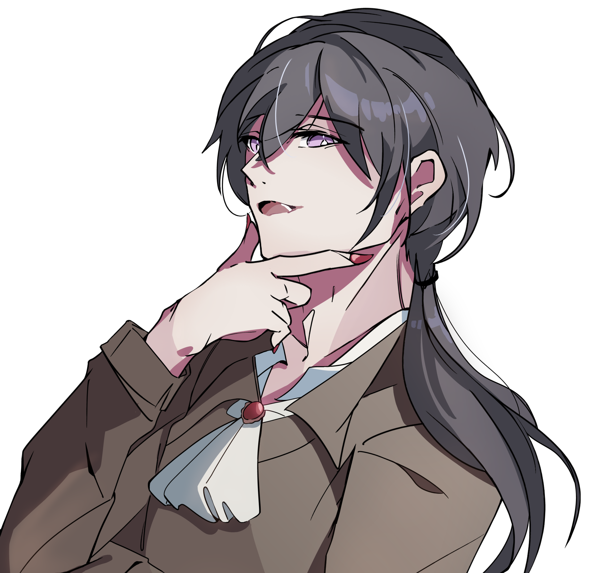

26歳
誕生日：9/21（おとめ座）
趣味：秘湯巡り、サイクリング、ミニチュア雑貨集め
好きな食べ物：ショートケーキ
好きな言葉：一期一会
宇多川探偵事務所
東京都○○区××1丁目□-□ 招福ビル4階
助手：中野 祐
※「S病院跡地」のネタバレを含む
病棟に響く叫び声、突然鳴り出すナースコール、血まみれの幽霊……。
某県某市S病院にはいくつもの奇怪な噂が存在する。
噂の真偽を確かめようと肝試しに訪れる人も後を絶たないと聞く。
そして先日、私の友人もこの病院を訪れたきり連絡が取れない。
「深夜にS病院跡地を訪れた者が、突如姿を消すことがある。」
S病院の5つ目の噂。
私は友人の手掛かりを探すべく、単独で廃病院に足を運んだわけである。
―――
現地に到着してすぐ、肝試しに来ていた大学生のグループに遭遇。
リーダー格らしい中野君を今回の助手に抜擢する。
結論から言うと、彼は私の助手としては少々力不足だった。
しかし最後まで探索に同行してくれた点は評価する。
彼の行方を追う途中で見たのは、噂通りの不気味な光景。
中野くん以外の面々は途中でリタイアしてしまった。無理もない。
誰もいないはずなのにずっと何者かの気配がするのは不気味だ。
まあとはいえ、私は怪奇現象には慣れていたからね。
3階までの探索は大変スムーズだったよ。
問題の4階。
私達は残されたビデオカメラを発見した。
そこに記録されていたのは、この病院を訪れたカップルの断末魔。
あれは演技ではない。
明らかに、この病院には何かが潜んでいる。
そして私は見てしまったのだ。
S病院に潜む幽霊、いや化け物の正体を。
およそ人間のものとは思えないぬらついた皮膚に毒々しい目玉。
私は助手の手を引いて華麗に化け物から逃れようとしたのだが、
あろうことか中野君は私が声をかけるよりも先に私を置いて逃げ出した。
なんてことだ。助手はいつでも探偵のことを助けるんじゃないのか？
――しかしそれでも私は化け物どもの攻撃をかわしS病院から生還した。
途中肩に1発銃弾を食らったがこれくらいなんてことはない。
―――
これがS病院にまつわる噂の真相だ。
その正体は幽霊などではなく、恐ろしい怪物が好奇心に駆られた人間をおびき寄せるための罠だったのだ！
この情報を見ている諸君も、
軽い気持ちでS病院を訪れることがないように注意してほしい。
助手：黒藻月 三日/忍
※「七不思議ホラーRTA」のネタバレを含む
「学校の七不思議」と聞いてどんなものを思い浮かべるだろうか？
動く肖像画、底なしのプール。
私の通っていた学校にも少なからずそんな都市伝説があった。
しかし今回私が遭遇したのは一風変わった七不思議。
謎を解くまで永遠にループする深夜の学校にて、
「七不思議ホラーRTA」が開幕するのだ！
―――
今回の助手は黒藻月君と忍君（仮名）。
目覚めたら2人とともに見知らぬ夜の学校にいた。
黒藻月君は中学校の先生をしているらしい。偶然だ。
忍君はどうやら学校にあまりなじみがないらしかった。
困惑する私たちの耳に響いたのは、懐かしいチャイムの音とアナウンス。
「この閉ざされた夜を終わらせる方法はただひとつ。
"七つ"廻る前に、"七不思議"を解き明かしてください」
ここから脱出するには七不思議を解き明かす必要があるらしい。
この私には容易いことだ。
七不思議どころか、十不思議でも二十不思議でも解明して見せよう！
早速調査に踏み出した直後、
廊下を猛スピードで走る化け物に遭遇した。
運悪く目をつけられてしまったのは私だった。
追い付いた足、否、腕で私を捉えて引き千切り――
私はその「てけてけ」の餌食となった。
――気が付くと、私は目覚めた部屋にいた。
死んだことでループしたのだろうか？
ともかく五体満足で調査を再開できた。
助手の活躍もあって、謎の解明は順調だった。
ひとりでに鳴るピアノに一段多い階段、そしてトイレの花子さん。
どうやらこの七不思議は他の神話と融合してしまったらしく、
謎を解くことで純粋な七不思議に戻せるのだとか。
我々が最後にたどり着いたのは、
一人孤独に放送室に囚われ七不思議の一部となった悲しき生徒だった。
最後の謎の答えは、その子に名前を与えること。
私達はその名前を投函して、そして。
目覚めたのは薄暗い教室ではなく、
昨日眠りについたベッドの上だった。
助手2人も無事に元の世界に戻れたようだ。
あ、そうそう、今度黒藻月君の学校に転校生が来るらしい。
私も久しぶりに学校生活を思い出したよ。
―――
そういうわけで今回もまた一つ、
いや七つ謎を解明してしまった。
巻き込まれる形であったとはいえ、
華麗に事件を解決してしまうのが私というわけさ。
そういえば、アップルパイがまだ届いていないな。
あの2人にもおすそ分けしようと思っていたのだが。
助手：ダニエル
※「東亰臨死クラブ」のネタバレを含む
時給2000円＋各種手当
未経験大歓迎！アットホームな職場です！
1年以上の長期で働いてくれる助手を大募集中！